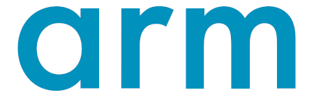
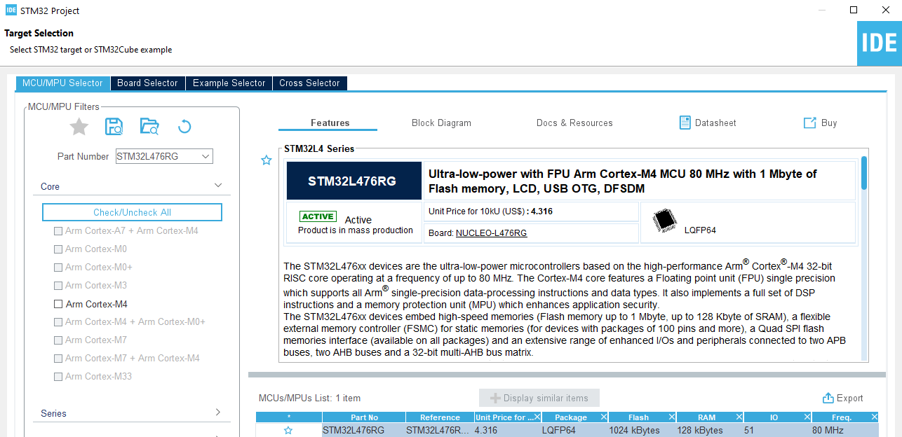
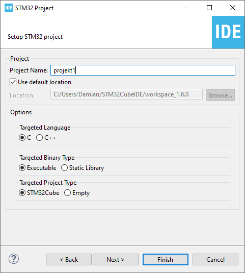
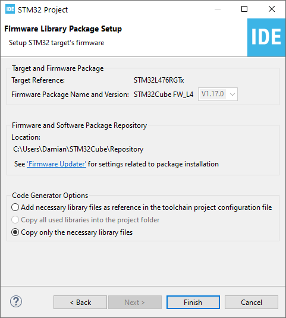

Czego dowiesz się z tej części kursu?
Zaczynamy od krótkiego wprowadzenia do STM32L4 – m.in. omówimy rodziny popularnych układów i zapoznamy się z mikrokontrolerem, który będzie głównym bohaterem kursu. Najważniejsza część tego artykułu dotyczy przygotowania środowiska, utworzenia projektu i wgrania go na płytkę Nucleo.
Dlaczego STM32?
W rozwiązaniach hobbystycznych królowały kiedyś mikrokontrolery AVR. Układy takie jak ATmega8 czy ATmega16 znał chyba każdy hobbysta. Później przyszła era Arduino, które sprawiło, że programiści nie muszą „przejmować się” sprzętem – w teorii ten sam kod zadziała identycznie na różnych płytkach. Jednak nadal większość projektów bazuje na mikrokontrolerach AVR (np. ATmega328P z Arduino UNO). Korzystanie z takich 8-bitowych układów ma wiele zalet, ale niestety ich możliwości są również bardzo mocno ograniczone. Mikrokontrolery STM32 to znacznie wydajniejsze układy, które z wielu względów stały się niezwykle popularne, zarówno wśród hobbystów, jak i w rozwiązaniach profesjonalnych. Dzięki nim możliwe jest po prostu tworzenie rozbudowanych urządzeń, które wymagają dużej mocy obliczeniowej oraz licznych peryferiów (np. wiele kanałów ADC, wiele SPI itd.).
Mikrokontrolery z rodziny STM32 zyskały olbrzymią popularność nie tylko ze względu na świetny sprzęt i mnogość dostępnych peryferiów. Czynnikami mocno przemawiającymi za tymi układami są również bardzo dobra dokumentacja techniczna i świetne wsparcie producenta, który m.in. dostarcza wygodne w użyciu biblioteki. Dzięki temu stosunkowo łatwo można przenosić programy z jednego typu układów na zupełnie inne (np. jeszcze wydajniejsze). Jeszcze kilka(naście) lat temu, zanim pojawiły się takie rozwiązania, zmiana mikrokontrolera wymagała przepisania większości kodu od nowa (ze względu na inne rejestry). Naszym zdaniem układy STM32 są obecnie świetnym wyborem dla osób, które myślą o elektronice w bardziej poważnych kategoriach. Będzie to dobry wybór dla wszystkich, którzy chcieliby wejść na wyższy poziom programowania mikrokontrolerów, używany w profesjonalnych zastosowaniach. Trend taki jest widoczny też na naszym forum. Pytania związane z zaawansowanymi projektami dotyczą najczęściej układów STM32, a ogłoszenia o pracy dla programistów systemów wbudowanych posiadają najczęściej w wymogach właśnie znajomość układów STM32.
Jak odnaleźć się w świecie STM32?
Mikrokontrolerów z rodziny STM32 jest bardzo dużo. W momencie tworzenia tego kursu w oficjalnym IDE do wyboru było ponad 1800 układów (a to i tak nie wszystkie). Tak wielka różnorodność jest z jednej strony dużą zaletą, bo pozwala na dobranie właściwego układu praktycznego do każdego projektu, z drugiej jednak strony wybór ten może być na początku wręcz przytłaczający. Warto zatem zacząć od ekspresowego rozeznania się w dostępnych rozwiązaniach.
Czym jest ARM?
Podczas programowania mikrokontrolerów często natrafia się na stwierdzenie, że dany układ posiada „rdzeń ARM” (np. Cortex-M). O co tu chodzi? Dawniej jedna firma projektowała od podstaw cały mikrokontroler, a następnie go produkowała. Z czasem uświadomiono sobie, że opracowanie nowego układu całkowicie od podstaw jest czasochłonne, a klienci wcale nie są zadowoleni z tego, że na rynku jest wiele niezgodnych ze sobą układów. Informacje w tej sekcji to tylko telegraficzny skrót, który ma jedynie nakreślić początkującym „tło historyczne”. Celowo zdecydowaliśmy się na pewne uproszczenia. Pierwsze układy ARM zostały zaprojektowane przez firmę Acorn RISC Machines (stąd wzięła się ich nazwa). Z czasem wydzielono inżynierów odpowiadających za ten projekt do nowej firmy – Advanced RISC Machines (Arm Ltd.). Zmieniono również całkowicie model biznesowy.

Firma ta jako jedna z pierwszych doceniła wartość własności intelektualnej – zamiast inwestować w drogie fabryki i produkować własne układy, „jedynie” projektuje rdzenie i sprzedaje licencje. Producenci fizycznych układów (mikrokontrolerów i mikroprocesorów) kupują projekt rdzenia, który wykorzystują do stworzenia swojego układu. Dodają niezbędne pamięci i układy peryferyjne oraz produkują układy. Dzięki temu projektowanie całego mikrokontrolera jest o wiele łatwiejsze i szybsze, a klienci otrzymują rozwiązania opierające się na popularnym standardzie. Firma Arm Ltd. została w 2020 roku przejęta przez firmę NVIDIA za 40 mld dolarów.
Architektury i rdzenie ARM
Tysiące pracowników Arm Ltd. zajmuje się tym tematem od wielu lat, więc powstało już sporo różnych rdzeni. Główny podział wyznaczają architektury – można o nich myśleć jak o generacjach procesorów. Nas interesuje architektura ARM w wersji ARMv7. W obrębie każdej architektury może być dostępnych wiele różnych rdzeni. W tym przypadku nadano im nazwy rozpoczynające się od „Cortex”: Cortex-A – mikroprocesory, przeznaczone głównie do obsługi systemów operacyjnych, np. Linux, Android, Windows CE, iOS. Wymagają zewnętrznych układów do pracy. Cortex-R – układy przeznaczone do systemów czasu rzeczywistego. Cortex-M – mikrokontrolery, czyli układy, które mają zintegrowaną pamięć i układy peryferyjne. Nas interesuje oczywiście rdzeń Cortex-M, który dzieli się jeszcze między innymi na: Cortex-M0 – proste układy, które mają być konkurencją dla popularnych 8-bitowców. Cortex-M3 – główna rodzina układów, która pojawiła się jako pierwsza na rynku. Cortex-M4 – wersja wydajniejsza od Cortex-M3, dodatkowo wyposażona w koprocesor arytmetyczny (FPU) oraz zestaw instrukcji DSP (ang. digital signal processor). Cortex-M7 – najszybsza i najbardziej rozbudowana wersja rdzenia.
Pierwszy projekt w STM32CubeIDE
Pora, aby nareszcie utworzyć pierwszy projekt. Z menu wybieramy opcję: File > New > STM32 Project. Uruchomiony zostanie kreator, dzięki któremu skonfigurujemy nowy projekt. Pierwszy krok to wybór mikrokontrolera, na który będziemy pisać kod. Dzięki temu nasze IDE załaduje odpowiednie biblioteki. Za pomocą filtrów (po lewej stronie) możemy łatwo odnaleźć mikrokontroler, który będzie idealny do naszego projektu. Możemy wskazać, jaki interesuje nas rdzeń, jakie peryferia powinny być na pokładzie tego układu itd. W naszym przypadku wybór jest prosty, bo wiemy, że przykłady z tego kursu będą bazowały na STM32L476RG – taką nazwę wpisujemy więc w pole Part Number.

Natychmiast po wpisaniu symbolu zobaczymy skrót informacji na temat wybranego mikrokontrolera, jego cenę (dla zamówień hurtowych) oraz informację o płytce rozwojowej, na której go znajdziemy. W oknie tym od razu mamy też dostęp do dokumentów, które powiązane są z tym układem. Po wybraniu odpowiedniego układu naciskamy przycisk Next. W kolejnym oknie zostaniemy zapytani o nazwę projektu. Wpisujemy np. „projekt1”, pozostałe opcje pozostawiamy bez zmian i klikamy Next.

Teraz widzimy podsumowanie naszego nowego projektu. Warto upewnić się tutaj, że zaznaczona jest opcja Copy only the necessary library files. Następnie naciskamy przycisk Finish. Podczas tworzenia pierwszego projektu mogą pojawić się jeszcze jakieś dodatkowe pytania (związane z konfiguracją IDE) – wszędzie najlepiej zgadzać się na domyślne propozycje.

W tym momencie STM32CubeIDE zacznie pobierać obszerne biblioteki. Na szczęście ta czynność jest wykonywana tylko raz, a mówiąc precyzyjniej: raz dla danej rodziny (np. STM32L4) i raz do czasu, aż pojawi się ich aktualizacja. Musimy się tutaj szykować na kolejne 700 MB danych (lub więcej). Co więcej, domyślnie wszystkie biblioteki będą zainstalowane na dysku oznaczonym literą C. Nawet jeśli wybierzemy inną lokalizację, to po pojawieniu się nowszej wersji IDE i tak wszystko prawdopodobnie wróci na domyślny dysk. Po pobraniu i przetworzeniu bibliotek zobaczymy okno, w którym pojawi się graficzne przedstawienie naszego mikrokontrolera. Warto jednak poświęcić chwilę na poznanie samego środowiska, a konkretnie tego, jakie są dostępne perspektywy.
Podsumowanie
Podsumowanie części kursu. Opisz co zostało omówione i co będzie w kolejnej części.